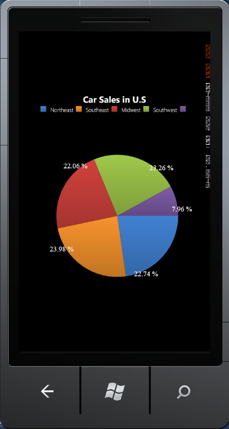

A Pie chart renders Y values as slices in a pie. These slices are rendered in proportion to the whole, which is simply the sum of all the Y values in the series. Consequently, Pie charts are used to visualize the proportional contribution (in terms of percentage or fraction) of categories of data to the whole data set. The X values in the data series will only be treated as nominal (categorical, qualitative) data. The Pie chart can display only one chart series at a time.
Pie chart provides support to explode particular slices or all slices. This feature can be implemented by using the ExplodedIndex and ExplodedAll properties of ChartPieType class. The exploded distance is set by using the ExplodedRadius property of ChartPieType class. You can set the colors for the Pie chart by using the Color Palette feature.
The following code example explains how to create a Pie Chart.
|
[XAML]
<syncfusion:ChartSeries Margin="0,0" Type="Pie" syncfusion:ChartDoughnutType.DoughnutCoefficient="0.5" Stroke="Transparent" > <syncfusion:ChartSeries.AdornmentsInfo> <syncfusion:ChartAdornmentInfo SegmentVerticalAlignment="Center" SegmentHorizontalAlignment="Right" Visible="True" SegmentIsOut="True" SegmentShowLine="True" AdornmentsPosition="TopAndBottom" SegmentLabelContent="Percentage" SegmentLabelFontSize="18" > </syncfusion:ChartAdornmentInfo> </syncfusion:ChartSeries.AdornmentsInfo> </syncfusion:ChartSeries>
|
|
[C#]
ChartArea area = new ChartArea();
// Create Pie Chart. ChartSeries series = new ChartSeries(); series.Type = ChartTypes.Pie; ChartPieType.SetExplodedIndex(series, 3);
// Create and initialize the Series Segment Label. ChartAdornmentInfo adornment = new ChartAdornmentInfo(); adornment.Visible = true; adornment.SegmentLabelContent = LabelContent.Percentage; series.AdornmentsInfo = adornment; area.Series.Add(series); |
The following screen shot shows a Pie Chart with the ExplodedIndex property set to 3.

Figure 39 : Pie Chart